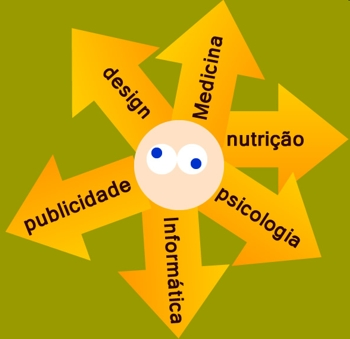
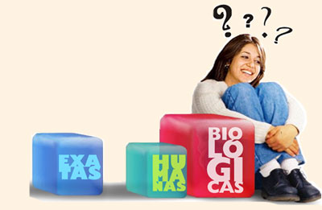
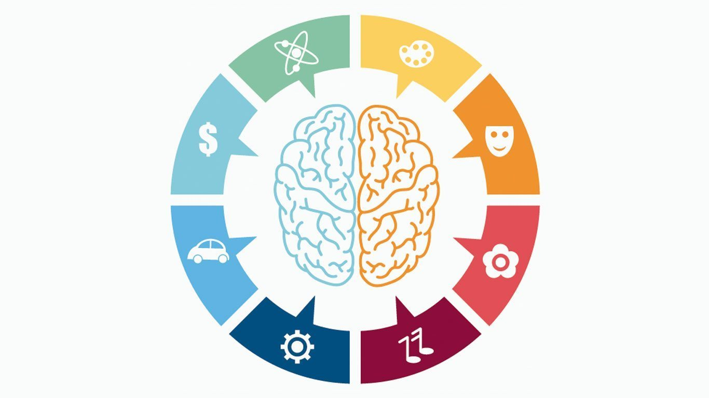
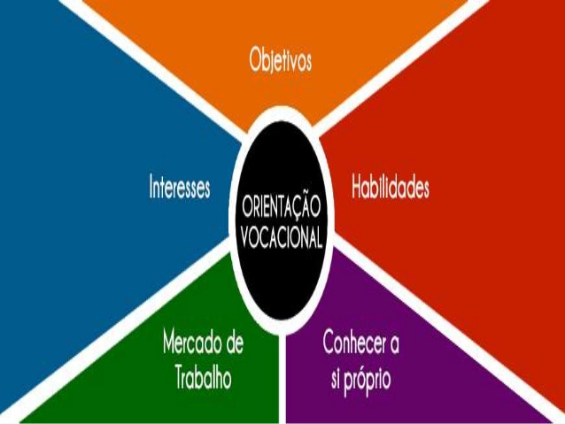

Teste Vocacional
Olá estudantes! Quando chega a época de prestar vestibular, a maioria fica na dúvida de qual carreira seguir. As possibilidades são tantas, que é difícil saber mesmo. Para servir de guia nessa escolha, existem os testes vocacionais. E você pode fazer esse teste vocacional online gratuitamente. Ao entrar no site, o participante deverá responder uma série de perguntas relacionadas aos seus gostos e atividades, com o objetivo de encontrar um plano de carreira para ingressar no mercado de trabalho.
Teste Vocacional Online “Mundo Vestibular”
Responda às perguntas e no final você poderá ter uma ideia da área de atuação que se adapta mais de acordo com suas respostas. É rápido e não muito complexo. É um teste bem raso, mas pode dar alguma luz pra quem está completamente perdido.
Para realizar o teste, clique na imagem:
Teste Vocacional Online “A Real Me”
31 perguntas rápidas que, no final, dão uma ideia de algumas profissões que podem ser seguidas. O teste faz um levantamento do seu perfil aproximando ou afastando de características como: Empreendedorismo, Social, Artística, Investigativa, Realista e Convencional, e a partir disso sugere algumas profissões que combinam com as características que mais se acentuam em você.
Teste Vocacional Online “Vestibular seriado”
É gratuito e rápido. O participante deve responder perguntas simples de múltipla escolha. No final, ele sugere um campo profissional que melhor se encaixe baseado em suas respostas.
Para realizar o teste, clique na imagem:
Teste Vocacional Online “Bradesco”
O teste é divido em duas etapas. Na primeira etapa você escolhe até 5 grupos de profissões com as quais se identifica. E na segunda você classifica características de 0 à 10 de acordo com afinidade. Dar a nota 10 para uma característica significa que você tem total afinidade com ela. É um teste extenso, mas continua sendo o queridinho dos estudantes indecisos.
Para realizar o teste, clique na imagem:
Teste Vocacional Online “Giro de Profissoes ”
É um teste abrangente com 4 perguntas de diferentes tipos, todas de múltipla escolha. Esse teste vocacional vai te dar importantes pistas sobre sua personalidade e ainda apontar carreiras que tem tudo a ver com você.
Para realizar o teste, clique na imagem:
É bom lembrar que...
O melhor uso para os testes online é colher todos os cursos resultantes, pesquisar a respeito de todos e fazer
uma reflexão demorada com o tema: “Eu vou ser feliz sendo um engenheiro (advogado, administrador e outros)? ”.
Quem decide é você!